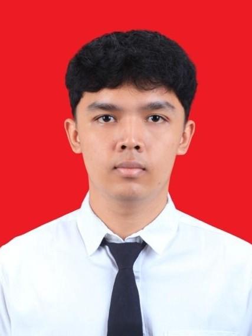

Bio Singkat

Nama Lengkap: Rahadyansyah Ibrahim Purnomo
Domisili: Dusun Pintu, Desa Dagangan, Kabupaten Madiun
Sebagai mahasiswa yang memiliki minat tinggi di bidang pengolahan aset 3D dan pengolahan custom asset GTA V Roleplay, saya terbiasa mengerjakan alur pembuatan karakter dari tahap awal hingga akhir. Saya memiliki pengalaman dalam mengolah model 3D dari konsep hingga siap diintegrasikan ke dalam game. Fokus utama saya adalah pembuatan ped (pedestrian/karakter NPC dan 3D Prop) menggunakan Blender serta penyesuaian tekstur dan materi visual agar terlihat optimal saat di dalam game.
Berdomisili di Dusun Pintu, Desa Dagangan, Kabupaten Madiun, saya terus mengasah kreativitas dan keterampilan teknis dalam dunia game development secara teratur. Dengan menggabungkan pemahaman rigging, texturing, serta optimasi polycount, saya berkomitmen untuk menghasilkan aset 3D berkualitas tinggi yang responsif, stabil, dan memberikan pengalaman visual yang impresif di dalam ekosistem game.
Daftar Keahlian Utama
- 3D Modeling & Sculpting di Blender
- Custom Asset & Ped Creation untuk GTA V Roleplay
- 3D Prop Artist
- In-Game Visual & Material Setup
Glosarium Istilah 3D
- Ped (Pedestrian)
- Istilah untuk model karakter manusia atau NPC dalam dunia game.
- Rigging
- Proses memasangkan tulang (skeletal armature) ke model 3D agar karakter dapat digerakkan dan dianimasikan.